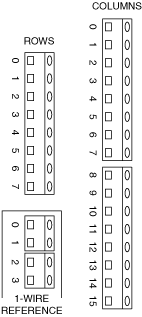

Expanding the NI PXI-2530/2530B Matrix Using the NI TB-2632/2632B
Use the NI TB-2632/2632B and bare wire to expand the NI PXI-2530/2530B.
Getting Started
To expand the NI PXI-2530/2530B, you need the following items:
- Bare wire
- Two or more NI TB-2632/2632B terminal blocks
- Two or more NI PXI-2530/2530B switch modules
NI TB-2632/2632B Terminal Reference
Refer to the following figure and complete the procedures in either the Expanding the NI PXI-2530/2530B Columns or Expanding the NI PXI-2530/2530B Rows section to expand the NI PXI-2530/2530B.

Complete the following steps to expand the columns of an NI PXI-2530/2530B using an NI TB-2632/2632B terminal block.
- Connect one end of the bare wire to a row screw terminal on one NI TB-2632/2632B.
- Connect the other end of the bare wire to the corresponding row screw terminal on another NI TB-2632/2632B.
- (Optional) To expand the columns on the NI PXI-2530/2530B further, attach another bare wire to the row screw terminal you accessed in the previous step. Connect the other end of the bare wire to the corresponding row screw terminal on another NI TB-2632/2632B.
- Repeat the previous steps for all rows.
Complete the following steps to expand the rows of an NI PXI-2530/2530B using an NI TB-2632/2632B terminal block.
- Connect one end of the bare wire to a column screw terminal on one NI TB-2632/2632B.
- Connect the other end of the bare wire to the corresponding column screw terminal on another NI TB-2632/2632B.
- (Optional) To expand the rows on the NI PXI-2530/2530B further, attach another bare wire to the column screw terminal you accessed in the previous step. Connect the other end of the bare wire to the corresponding column screw terminal on another NI TB-2632/2632B.
- Repeat the previous steps for all columns.